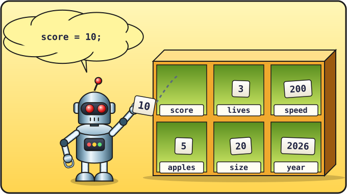

Lección 3 de 16 ⏱ 45 minutos
Variables
Un juego tiene que recordar muchas cosas: los puntos, la longitud de la serpiente, la velocidad. Para eso los programas tienen variables: cajas con etiqueta donde puedes guardar números y texto.
- crear variables con la orden
let; - aprender a cambiar lo que hay dentro de una variable;
- pegar texto a partir de trozos;
- escribir un programa que pregunta tu nombre.
| 5 min | Repaso: la consola y los errores |
| 15 min | Qué es una variable, let, cambiar un valor |
| 10 min | Texto y pegar cadenas |
| 15 min | Un programa que conversa con prompt, tareas |
Una caja con etiqueta
Imagina una caja con una etiqueta que pone score («puntuación» en inglés). Vamos a meter en ella el número 0:
let score = 0;
let— «que haya»: creamos una caja nueva;score— el nombre de la caja (la etiqueta);=— «mete dentro»;0— lo que metemos.
Ahora, en cualquier sitio donde escribamos score, el ordenador usará lo que haya en la caja.

score = 10;: mete el número 10 en la casilla score.Abre prueba.html, borra todo lo que hay entre <script> y </script> y escribe:
let score = 0; console.log(score); score = 10; console.log(score); score = score + 1; console.log(score);
Guarda, recarga y mira la consola: 0, 10, 11.
Espera… ¿score = score + 1?
En matemáticas eso es imposible: un número no puede ser igual a sí mismo más uno. Pero en programación = no significa «igual», sino «mete en la caja». El ordenador lee esta línea de derecha a izquierda:
- coge lo que hay en
score(un 10); - le suma 1 (sale 11);
- vuelve a meter el resultado en
score.
¡Justo así crecerán los puntos en nuestro juego cuando la serpiente se coma una manzana!
let solo hace falta cuando creamos la caja. Cuando cambiamos lo que hay dentro, escribimos simplemente score = 10;. Si escribes let score por segunda vez, sale el error redeclaration of let score: «la caja score se declara otra vez; ya existe».
Reglas para los nombres
- Solo letras inglesas (sin tildes ni ñ), cifras y
_. Sin espacios. Tampoco pueden empezar por una cifra. - Las mayúsculas y las minúsculas son distintas:
scoreyScoreson dos cajas diferentes. - Si el nombre tiene varias palabras, cada palabra a partir de la segunda empieza con mayúscula:
snakeLength,bestScore. Parecen las jorobas de un camello, por eso este estilo se llama «camelCase». - Usa nombres claros:
speedes mejor quesoabc. En el mundo de la programación los nombres suelen estar en inglés, así que en el juego también los pondremos en inglés.
Texto en las variables
En una variable también se puede guardar texto (una cadena):
let name = "Lucía";
console.log("¡Hola, " + name + "!");
Si sumas cadenas con +, se pegan en una sola: ¡Hola, Lucía!. No olvides el espacio dentro de las comillas después de la coma, o saldrá «¡Hola,Lucía!».
¿Y si pegas texto y un número?
let apples = 5;
console.log("Manzanas comidas: " + apples);
console.log("5" + 5);
console.log(5 + 5);
Sale Manzanas comidas: 5, luego 55 (el texto «5» y el número 5 se han pegado) y 10 (se han sumado dos números). Recuerda: las comillas convierten un número en texto.
Un programa que conversa
La orden prompt muestra una ventanita donde se puede escribir algo. Lo que escriba la persona se puede guardar directamente en una variable:
let name = prompt("¿Cómo te llamas?");
alert("¡Hola, " + name + "! Vamos a programar un juego.");
let year = 2026;
let born = prompt("¿En qué año naciste?");
alert("Tienes unos " + (year - born) + " años.");
La expresión (year - born) va entre paréntesis para que el ordenador primero calcule la diferencia y luego la pegue al texto.
year.
Variables en la Serpiente
Estas son las variables que aparecerán en nuestro juego:
| Variable | Qué guarda |
|---|---|
score | los puntos: cuántas manzanas se han comido |
speed | la velocidad de la serpiente |
size | el tamaño de una casilla del campo |
snake | dónde está cada trozo de la serpiente |
apple | dónde está la manzana |
- Crea una variable
lives(vidas) con el valor 3. Quita una vida (lives = lives - 1;) y muestra el resultado en la consola. - Pregunta al jugador su animal favorito y muestra: «Mi animal favorito es …».
- Crea las variables
width = 20yheight = 15. Calcula cuántas casillas tiene el campo,width × height, y muestra el resultado con una explicación. - ⭐ Escribe
score++;en lugar descore = score + 1;. ¿Funciona? Es una forma abreviada, y la necesitaremos más adelante.
Compruébalo
- Sé qué hace
lety que=significa «mete dentro». - Entiendo por qué
score = score + 1aumenta los puntos. - Sé pegar texto y variables con
+.